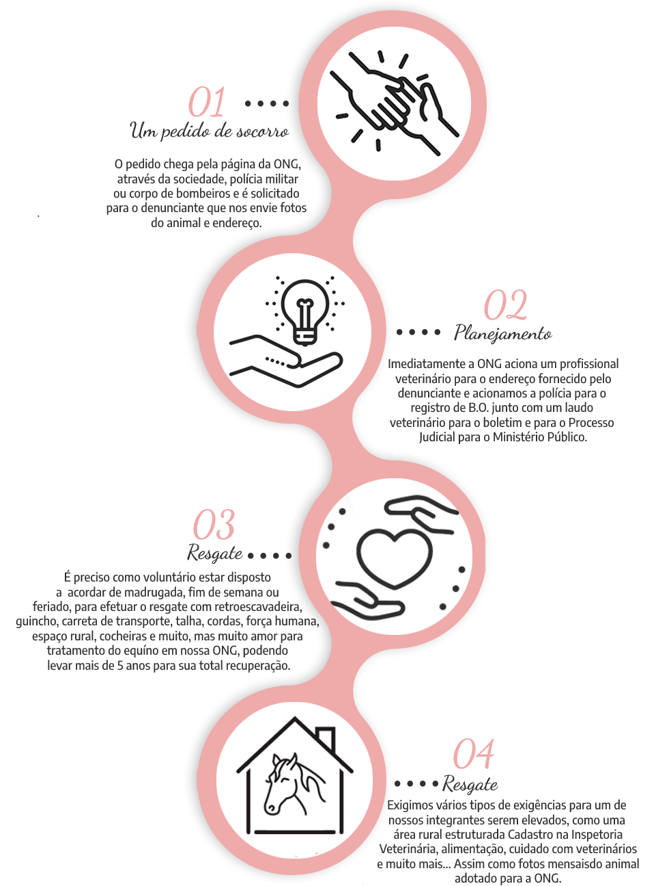
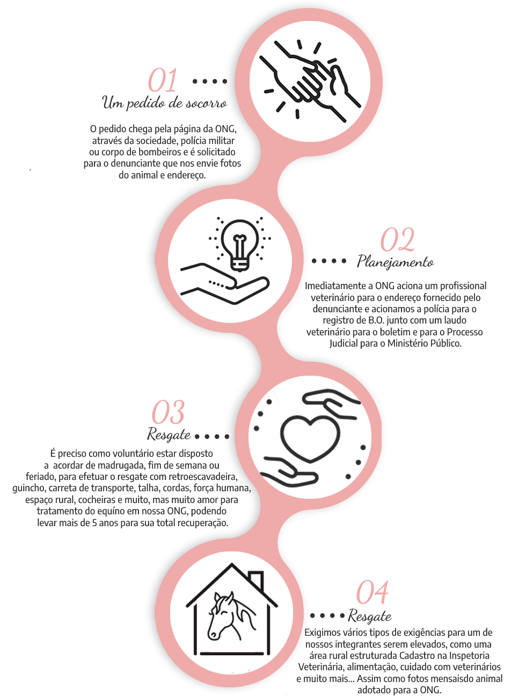

Quem Somos?
A ONG PÉ DE PANO SOS CAVALOS é uma organização sem fins lucrativos e de tempo de duração indeterminada, com objetivo de defender os direitos dos animais, com ênfase em cavalos, no município de Santo Ângelo/RS. Fundada no ano de 2015 por um grupo de pessoas sensíveis aos maus tratos aos animais, na medida em que não possuíam no munícipio nenhum amparo de proteção para os cruéis casos de maus tratos como cavalos escravizados em carroça trabalhando por horas e horas com excesso de peso, muitos subnutridos, alguns espancados e outros machucados, éguas prenhas tracionadas, esfaqueamento de animais entre outros tantos sofrimentos.


Como Trabalhamos
 
